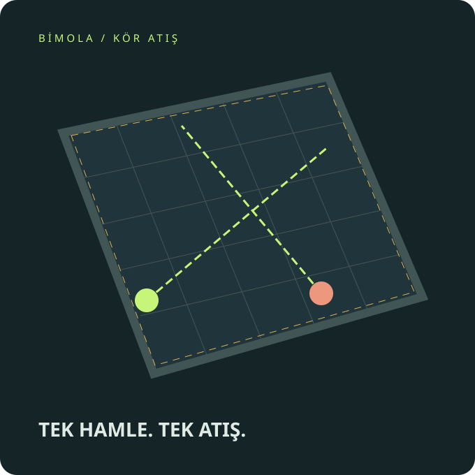

GİZLİ HAMLE · EŞZAMANLI ATIŞ
Görmeden seç.
Tek atışta kal.
Rakibin nerede? Konumunu seç, nişanını kilitle. Herkes açığa çıktığında kararını değiştirmek için çok geç.
1–8 kişi · Botlarla da oynanır · 3D arena · Fare, dokunmatik veya klavye

Arena hazır.
MAÇ TAMAMLANDI
Toplam puanlar
| Sıra / Oyuncu | Hayatta kalma | İsabet | Raund | TOPLAM |
|---|
Maç istatistikleri
| Oyuncu | Atış / isabet | İsabet oranı | En uzun seri | Elendi / kalkan | En çok vurduğu |
|---|
Raund geçmişi
Puanlar bütün raundların toplamıdır. Eşit toplam puanlar aynı sırayı paylaşır.
AĞIR ÇEKİM · 0,25×
SEKTÖR 07 DÖKÜMHANE
WASD / oklar: yürü · Fare: kamera ve nişan · Space / Enter: kilitle · Esc: fareyi bırak.